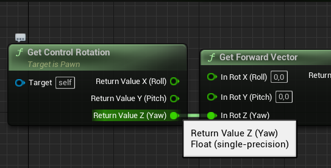

Узнайте, как использовать эту функцию бета-версию, но будьте осторожны при ее применении.
Большие мировые координаты (LWC) легко интегрируются в ваш существующий проект. Вы можете импортировать свой проект в Unreal Engine 5 и следовать этому руководству по конвертации, однако возможны некоторые проблемы. В исходном коде для вариантных типов используется псевдоним typedef, который по умолчанию соответствует типу double, что соответствует исходному названию Unreal Engine 4(UE4). Ваш существующий код будет автоматически перекомпилирован для поддержки типа double.
Для обеспечения совместимости в будущем мы рекомендуем по возможности использовать псевдоним FVector, возвращаясь к явным типам FVector3f или FVector3d только в тех случаях, когда вам действительно нужно использовать конкретный тип.
В таблице ниже представлены типы, которые были преобразованы в варианты:
Для обеспечения совместимости в будущем мы не рекомендуем использовать вариантные типы, за исключением случаев крайней необходимости. Вместо этого следует использовать исходные версии, перечисленные в псевдониме выше, и явные типы float и double только в тех случаях, когда необходимо обеспечить определенный тип данных.
Если вы хотите выполнить приведение типов между вариантами, это нужно делать явно. Например:
Функционал FMath был расширен для поддержки чисел с плавающей запятой. Это включает поддержку стандартных математических операций с новыми типами данных.
Сюда входит поддержка векторизации с помощью VectorRegister, расположенного в каталоге UnrealMathSSE.h/UnrealMathNeon.h, который добавляет типы VectorRegister4f и VectorRegister4d.
В результате бета-тестирования крупных миров в UE5, по умолчанию WORLD_MAX размер был оставлен на уровне UE4 WORLD_MAX, равном 21 км, и проверка двигателя на границах миров остается включенной. Есть два варианта поэкспериментировать с масштабом ваших больших миров:
Вы можете отключить проверки границ, обратившись к своему классу WorldSettings и установив для bEnableLargeWorlds boolean значение true:
Это позволит сохранить значение WORLD_MAX примерно на уровне 21 км и обеспечит повышенную стабильность при экспериментах в первой версии Unreal Engine 5.0.
Кроме того, вы можете установить глобальное значение UE_USE_UE4_WORLD_MAX для увеличения границ мира:
Таким образом, значение WORLD_MAX составит примерно 88 миллионов километров.
Это значение может измениться в будущих выпусках Unreal Engine, а также могут возникнуть проблемы со стабильностью, которые будут постоянно устраняться в процессе разработки Unreal Engine 5.
Ниже приведены несколько категорий ошибок при компиляции и способы их устранения.
При написании предварительных объявлений следует использовать макрос UE_DECLARE_LWC_TYPE.
Например, вместо:
FVector следует объявлять следующим образом:
Пожалуйста, ознакомьтесь с Engine/Source/Runtime/Core/Public/CoreFwd.h примерами правильного использования UE_DECLARE_LWC_TYPE в зависимости от типа.
Предварительное объявление вариантных типов не требуется для файлов, включающих generated.h или CoreMinimal.h.
Если в вашем проекте возникают ошибки C2027/C2371, связанные с FVector или другим вариантным типом, то наиболее вероятной причиной является предварительное объявление этого типа как структуры в вашем коде.
Вы можете столкнуться с предупреждениями, аналогичными приведенному выше, если вызываете многоаргументные функции FMath, которые содержат аргументы вариантного типа, с плавающей запятой или константные аргументы.
Важно, чтобы вы не игнорировали предупреждения о неоднозначности разрешения функций, поскольку они могут указывать на снижение точности вычислений в вашей программе.
Вы можете исправить ошибки, связанные с точностью, передав явные аргументы шаблона, приведя несовместимые типы к одному или изменив константы в соответствии с нужным типом.
Например:
Для преобразования между типами Variant с плавающей запятой и Double в коде требуется явное приведение, чтобы избежать непреднамеренных проблем с точностью или производительностью. Например, вам может понадобиться учесть это при передаче FVector3f в функцию, для которой требуется FVector4. FVector3f следует привести к типу FVector, чтобы неявное приведение от FVector к FVector4 завершило преобразование.
Явное приведение типов применяется к аналогичным типам во внутренних системах. Например, преобразование Chaos FVec3 в FVector3f.
Мы не поддерживаем двойные параметры на графическом процессоре. Таким образом, типы FVector, FVector2D, FVector4 и FMatrix больше не поддерживаются в объявлениях SHADER_PARAMETER в нативном коде и должны быть заменены на вариант с плавающей запятой соответствующего типа.
Вы можете столкнуться со сбоями при проверке во время выполнения, например: Неожиданный размер массива элементов в TArray::BulkSerialize Это может быть результатом массовой сериализации структуры, содержащей тип, который был автоматически преобразован в вариант double. Эту проблему можно решить, добавив параметр bForcePerElementSerialization в зависимости от версии архива:
Мы рекомендуем вам убедиться, что в вашем архиве установлена последняя версия.
Преобразование компонентов типа LWC в тип double может привести к проблемам с точностью в ваших конвертированных проектах UE4, особенно если ваш код написан с учетом того, что эти компоненты являются числами с плавающей запятой. Мы рекомендуем после обновления проверить код на наличие таких проблем.
Ниже приведены несколько способов, с помощью которых можно включить в проекте предупреждения о небезопасном приведении типов.
В файл build.cs вашего проекта можно добавить следующее:
Несмотря на то, что в большой кодовой базе может генерироваться значительное количество предупреждений, этот инструмент незаменим для выявления и исправления ситуаций, которые могут привести к потере точности.
В настоящее время некоторые заголовочные файлы движка выдают предупреждения о небезопасном приведении типов. Это будет исправлено в одном из будущих релизов.
Следующие макросы позволяют включать и выключать предупреждения о небезопасном приведении типов:
Код, который напрямую обращается к компонентам типа, может потребовать некоторой доработки, чтобы избежать потери точности. Ошибки, связанные с потерей точности, могут привести к некорректному выполнению кода, например:
Для точного двойного значения MyVector.X разница между X и OtherVector.X может быть достаточно существенной, чтобы заставить код пойти по этому пути.
Для проекта, который планирует выйти за рамки старых ограничений UE4 по расстоянию в 10,5 км, это становится все более опасным по мере удаления от исходной точки.
Если вы планируете использовать в своем преобразованном проекте координаты большого мира, вам необходимо проверить кодовую базу на наличие таких ошибок. Типы LWC предоставляют псевдоним FReal для базового типа компонента (float или double). Использование FReal вместо базовых типов гарантирует отсутствие проблем с точностью, даже если в будущем эти типы изменятся, например:
Более продуманным подходом было бы заменить все типы float на double во всей кодовой базе:
Код, напрямую обращающийся к компонентам типа, может потребовать рефакторинга, чтобы избежать потери точности.
При преобразовании проекта UE4, который должен оставаться в пределах допустимых значений (примерно 10,5 км от исходной точки), может снизиться точность, но это не повлияет на работу проекта.
По умолчанию массовая сериализация массивов основных типов по умолчанию (FVector) в преобразованных проектах отключена. Движок должен загружать каждый компонент вектора как число с плавающей запятой, а затем преобразовывать его в число с плавающей запятой двойной точности. При повторном сохранении затронутого ресурса он записывается как число с плавающей запятой двойной точности, и массовая сериализация снова становится доступной. Если вы выполняете массовую сериализацию структур, содержащих тип variant, вам нужно будет преобразовать его в тип float или принудительно выполнить сериализацию для каждого экземпляра в вызове BulkSerialize / отключить TCanBulkSerialize поддержку.
Сериализованные базовые типы, помеченные спецификаторами свойств, автоматически распознают переключение между вариантами double и float, что позволяет в любой момент вернуть потраченную впустую память, переключившись на вариант float.
В UE5 все типы Blueprint Float представлены модифицированным типом Float, который может работать как с одинарной, так и с двойной точностью. Это означает, что ваши Blueprint автоматически будут поддерживать шкалы LWC. Все типы float и double в импортированном проекте Blueprint из UE4 преобразуются в новый тип в результате отказа от явной поддержки float и double в Blueprint.
Исходный код теперь может содержать как типы float, так и double. Unreal Header Tool(UHT) интерпретирует любой доступный в Blueprint тип с плавающей запятой в коде как Blueprint Float с соответствующим подтипом одинарной (C++ float) или двойной (C++ double) точности, что позволяет автоматически преобразовывать значения Float любой точности, поступающие от любого узла Blueprint. Мы рекомендуем соблюдать осторожность при использовании терминов, связанных с плавающей запятой. В Blueprints тип float может обозначать как тип с одинарной, так и с двойной точностью. Однако в C++ нужно четко указывать, какой тип вам нужен. Термин float обозначает тип с одинарной точностью, а double — с двойной. Unreal Header Tool распознает оба типа как допустимые для свойств и параметров функций. Если тип данных — «float» или «double», Blueprint будет рассматривать их как единый тип «Float», но укажет, одинарная это точность или двойная.

С точки зрения пользователя Blueprint, нет никакой разницы между типами с одинарной и двойной точностью. Эти контакты можно соединять без явных узлов приведения типов. Тем не менее в таких случаях Unreal Engine может потребоваться сужение или расширение типа. Компилятор Blueprint автоматически анализирует граф Blueprint на предмет возможных преобразований с плавающей запятой. При обнаружении таких преобразований компилятор автоматически вставляет операцию приведения типов в базовый код. Это работает и с контейнерами.
Разработчикам не нужно вносить какие-либо специальные изменения в старые Blueprint-скрипты, чтобы использовать преимущества больших мировых координат. По умолчанию Unreal Engine автоматически преобразует плавающие точки в формат двойной точности. Если в нативном коде на C++ использовались плавающие точки одинарной точности, то они и будут представлять собой плавающие точки одинарной точности. Это касается свойств нативного кода на C++, параметров функций и параметров любых Blueprint-функций, привязанных к делегатам нативного кода на C++.
Любой метод, помеченный спецификатором свойства UFUNCTION и содержащий значение типа float, может привести к неточностям, поскольку значение Blueprint Float приводится к типу float с меньшей точностью. Важно проверить все существующие свойства UFUNCTION. Это поможет определить, не нужно ли изменить параметры или возвращаемые значения на тип double, чтобы избежать проблем с точностью в будущем. Переходить с типа float на тип double и обратно можно в любое время.
Это касается всех узлов K2, которые вы могли создать или подключить в коде.
При преобразовании существующих плагинов для поддержки больших миров мы советуем вам соблюдать осторожность, чтобы избежать потери точности. Мы рекомендуем использовать общие рекомендации, приведенные в разделе «Проблемы с точностью», для обновления основных компонентов вашего плагина.
Некоторые плагины могут потребовать преобразования в формат полного пространства мира. Это можно сделать, преобразовав базовые типы данных в тип double. Хотя движок возьмет на себя большую часть этого процесса при переносе вашего плагина в UE5, вам нужно будет убедиться, что ваш код не приводит к ошибкам из-за потери точности при сохранении результатов в виде чисел с плавающей запятой. Например, FVectors, которые использовались для представления мировых координат в UE4, в UE5 уже были заменены на типы с двойной точностью. Однако если ваш плагин обращается к базовым типам на уровне компонентов, может потребоваться рефакторинг кода для сохранения точности.
Некоторым плагинам достаточно работать в локальном пространстве с плавающей запятой, и они могут полагаться на движок, который отобразит результаты в мировом пространстве. В этом случае можно попробовать преобразовать основные типы данных, используемые в плагине, в варианты с плавающей запятой, чтобы освободить память, которая используется для двойных чисел.
Плагины, предназначенные для обеих версий движка, должны распространяться в виде исходного кода для компиляции или в виде отдельных бинарных пакетов. UE4 не поддерживает варианты основных типов, поэтому вам нужно либо убедиться, что ваш код, совместимый с UE5, использует только основные типы по умолчанию (компилируются как float в UE4 и как double в UE5), либо предоставить отдельный исходный код для версий плагина для UE4 и UE5. Чтобы обеспечить правильную точность промежуточных вычислений с использованием компонентов основных типов, их можно обрабатывать с помощью объявления auto в C++ или с помощью типов double.
Новые типы HLSL были представлены вместе с Large World Coordinates и доступны в разделе LargeWorldCoordinates.Файл ush. Дополнительную информацию о том, как преобразовать шейдерный код в UE5, можно найти в документации по рендерингу LWC.